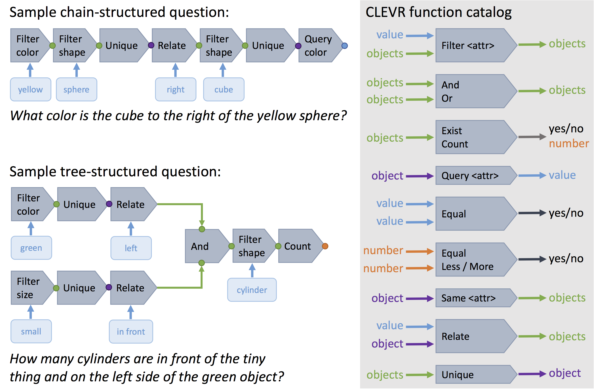

CLEVR: A Diagnostic Dataset for
Compositional Language and Elementary Visual Reasoning
Abstract
When building artificial intelligence systems that can reason and answer questions about visual data, we need diagnostic tests to analyze our progress and discover shortcomings. Existing benchmarks for visual question answering can help, but have strong biases that models can exploit to correctly answer questions without reasoning. They also conflate multiple sources of error, making it hard to pinpoint model weaknesses. We present a diagnostic dataset that tests a range of visual reasoning abilities. It contains minimal biases and has detailed annotations describing the kind of reasoning each question requires. We use this dataset to analyze a variety of modern visual reasoning systems, providing novel insights into their abilities and limitations. Bharath Hariharan
Bharath Hariharan
 Laurens van
Laurens van  Fei-Fei Li
Fei-Fei Li
 Larry Zitnick
Larry Zitnick
 Ross Girshick
Ross Girshick
Presented at CVPR 2017
Download
Main Dataset
This is the main dataset used in the paper. It consists of:- A training set of 70,000 images and 699,989 questions
- A validation set of 15,000 images and 149,991 questions
- A test set of 15,000 images and 14,988 questions
- Answers for all train and val questions
- Scene graph annotations for train and val images giving ground-truth locations, attributes, and relationships for objects
- Functional program representations for all training and validation images
Compositional Generalization Test (CoGenT)
This data was used in Section 4.7 of the paper to study the ability of models
to recognize novel combinations of attributes at test-time. The data is generated
in two different conditions:
Condition A
- Cubes are gray, blue, brown, or yellow
- Cylinders are red, green, purple, or cyan
- Spheres can have any color
Condition B
- Cubes are red, green, purple, or cyan
- Cylinders are gray, blue, brown, or yellow
- Spheres can have any color
- A training set of 70,000 images and 699,960 questions in Condition A
- A validation set of 15,000 images and 150,000 questions in Condition A
- A validation set of 15,000 images and 149,991 questions in Condition B
- A test set of 15,000 images and 149,980 questions in Condition B
- A test set of 15,000 images and 149,992 questions in Condition B
- Answers, scene graphs and functional programs for all train and val images and questions
All data is released under the
Creative Commons CC BY 4.0 license.
Questions in CLEVR test various aspects of visual reasoning including
attribute identification,
counting,
comparison,
spatial relationships, and
logical operations.

Q:
Are there an
equal
number of
large things and
metal spheres?
Q:
What size is the
cylinder
that is left of the
brown metal thing
that is left of the
big sphere?
Q:
There is a sphere
with the same size as
the metal cube;
is it made of the same material as
the small red sphere?
Q:
How many objects are
either
small cylinders or
red things?
Each question in CLEVR is represented both in natural language and as
a functional program. The functional program representation allows for
precise determination of the reasoning skills required to answer each question.

Dataset Generation Code
The code for generating the CLEVR dataset is available on GitHub. With this code you can:- Render new CLEVR images using Blender
- Generate new CLEVR questions for CLEVR images